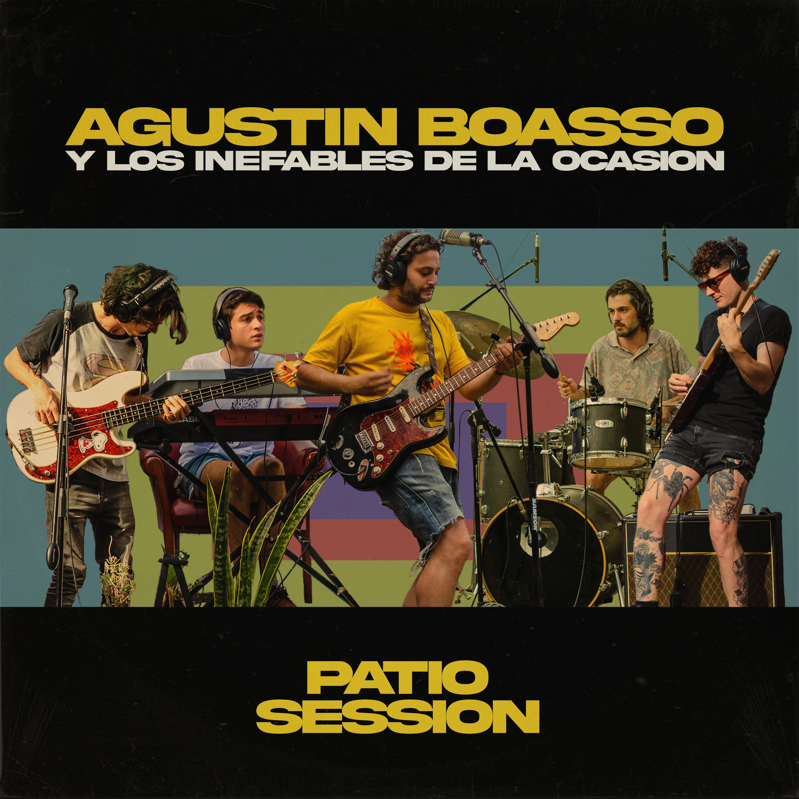
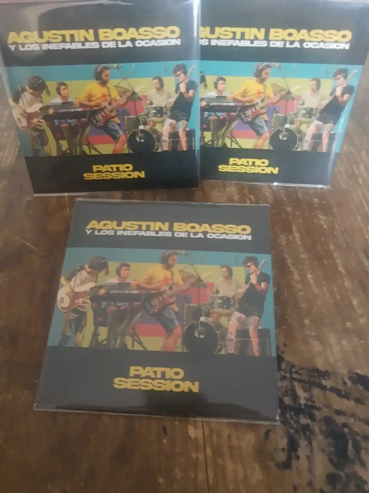
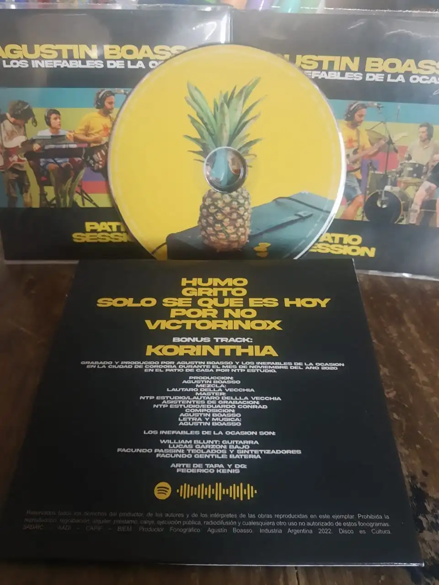
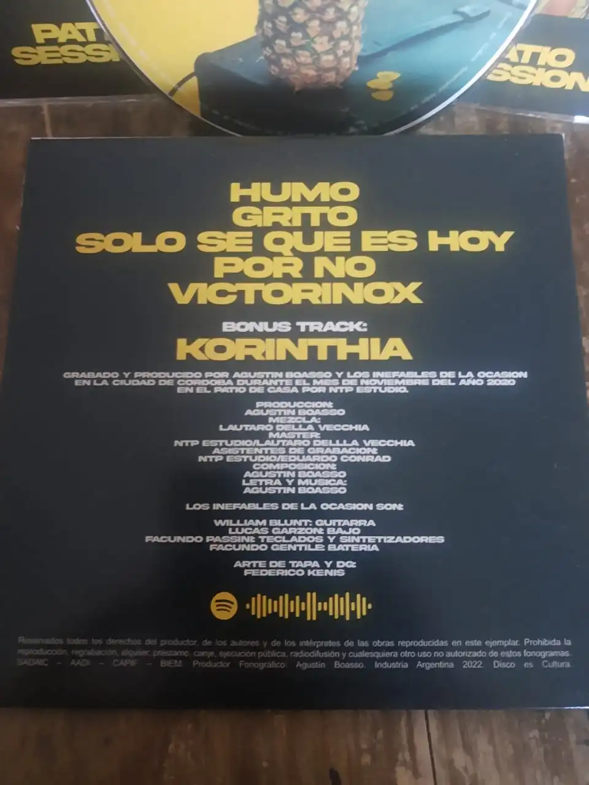

En marzo de 2022AGUSTIN BOASSO lanza en stream su segundo EP: PATIO SESSION. Un disco de rock fresco donde se presenta a los inefables de la ocasion como banda que acompaña al artista en su exposicion de las canciones de su primer EP VOL.I.
Este material cuenta con 5 canciones (6 en su version física): Humo, Grito, Solo se que es hoy, Por no y Victorinox.
Este disco fue producido en el patio de la casa del autor junto a NTP STUDIO a cargo de Lautaro Dellavecchia y Eduardo Conrad. Quienes se encargaron de la tecnica, la mezcla y la masterizaición del material.
Fue integramente producido por AGUSTIN BOASSO y Florencia Boasso.
En este disco el autor plasma en vivo las canciones grabadas en su primer EP: VOL.I
Musicos que participaron en esta entrega:
Este disco cuenta con version física en la que se incluye KHORINTIA como BONUS TRACK. Esta canción solo se puede escuchar a travez de esta version. El disco se encuentra a la venta desde el instagram del autor.



PODES ESCUCHARLO HACIENDO CLICK AQUI.